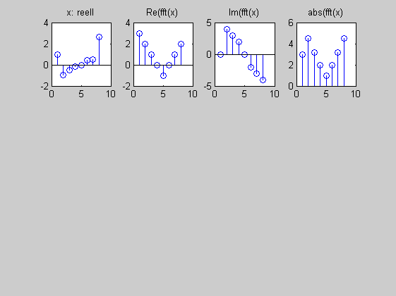
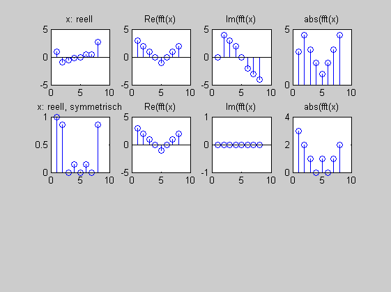
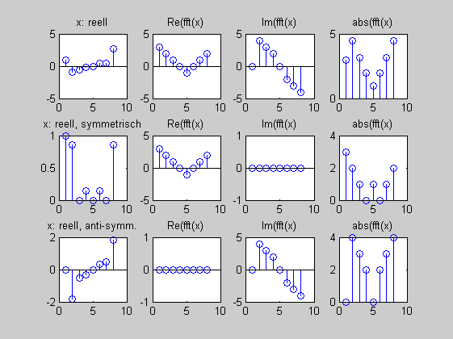

Contents
symmetrieEigenschaften (Aufgabe)
(c) HSM B.Wir 17.8.2012
clear all; close all; % Geben Sie jeweils 8 komplexe Zahlen, so dass gilt:
(i) Nach der IDFT ein reelles Signal
X_r = [ 3, 2, 1, 0, -1, 0, 1, 2]; X_i = [ 0, 4, 3, 2, 0, -2, -3, -4]; X = X_r + 1j*X_i; x = ifft(X); figure (1) subplot(3,4,1); stem(x); title('x: reell'); subplot(3,4,2); stem(X_r); title('Re(fft(x)'); subplot(3,4,3); stem(X_i); title('Im(fft(x)'); subplot(3,4,4); stem(abs(X)); title('abs(fft(x)');
(ii) Nach der IDFT ein reelles symmetrisches Signal
X_r = [ 3, 2, 1, 0, -1, 0, 1, 2]; X_i = [ 0, 0, 0, 0, 0, 0, 0, 0]; X = X_r + 1j*X_i; x = ifft(X); subplot(3,4,5); stem(x); title('x: reell, symmetrisch'); subplot(3,4,6); stem(X_r); title('Re(fft(x)'); subplot(3,4,7); stem(X_i); title('Im(fft(x)'); subplot(3,4,8); stem(abs(X)); title('abs(fft(x)');
(iii) Nach der IDFT ein relles antisymmetrisches Signal
X_r = [ 0, 0, 0, 0, 0, 0, 0, 0]; X_i = [ 0, 4, 3, 2, 0, -2, -3, -4]; X = X_r + 1j*X_i; x = ifft(X); subplot(3,4,9); stem(x); title('x: reell, anti-symm.'); subplot(3,4,10); stem(X_r); title('Re(fft(x)'); subplot(3,4,11); stem(X_i); title('Im(fft(x)'); subplot(3,4,12); stem(abs(X)); title('abs(fft(x)');